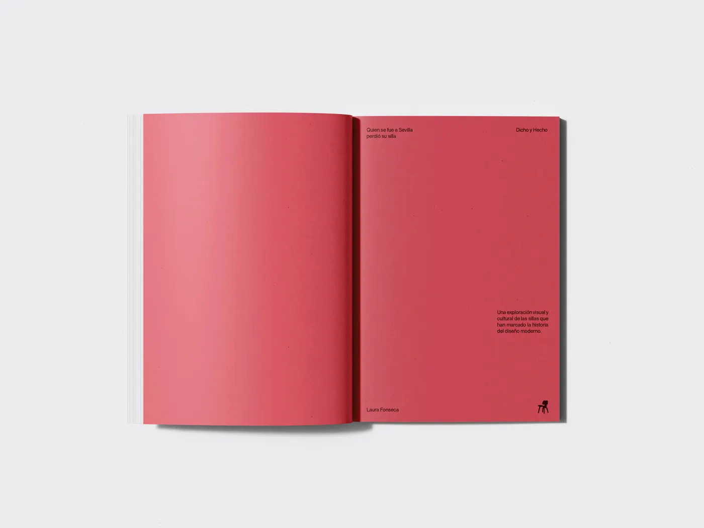
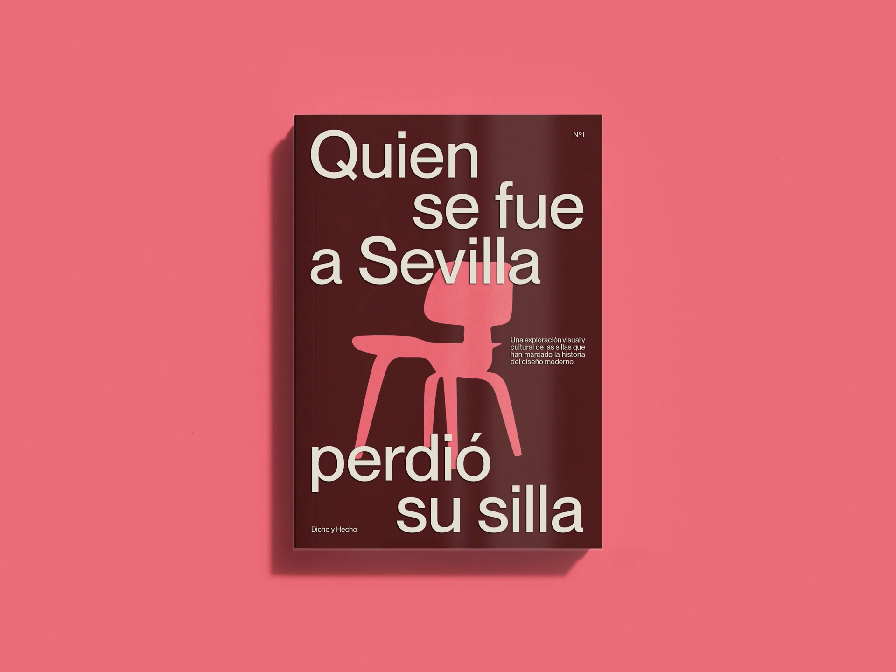
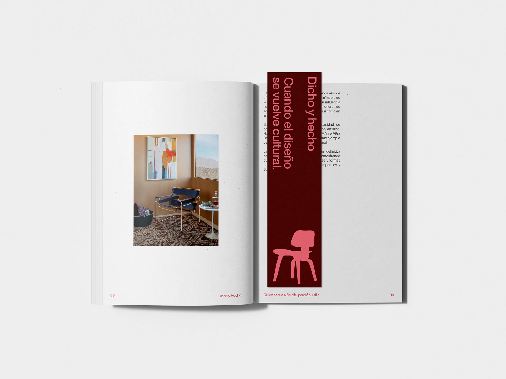
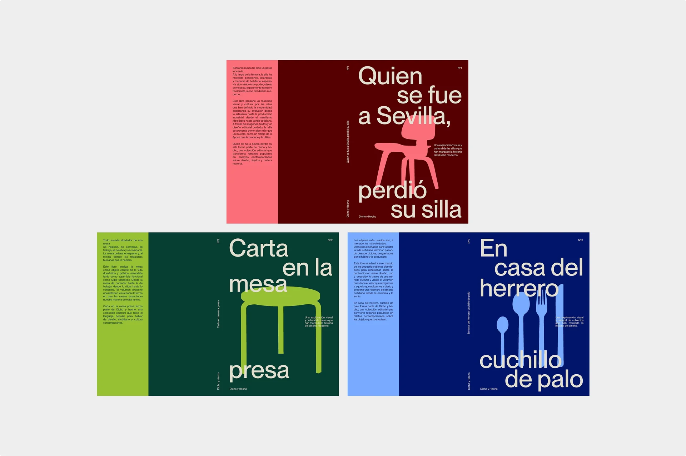
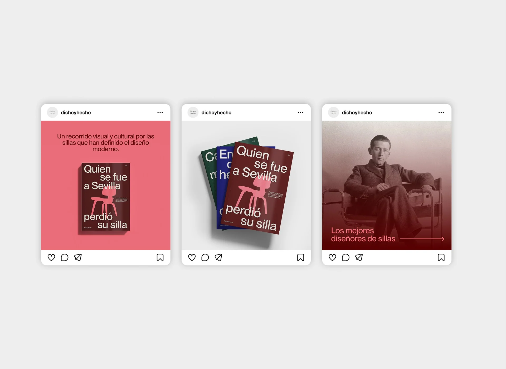
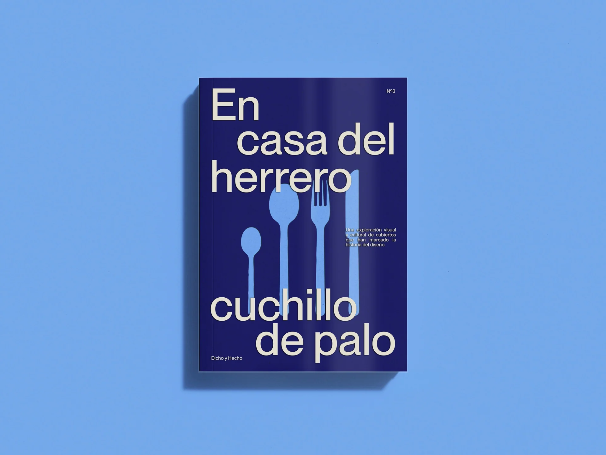
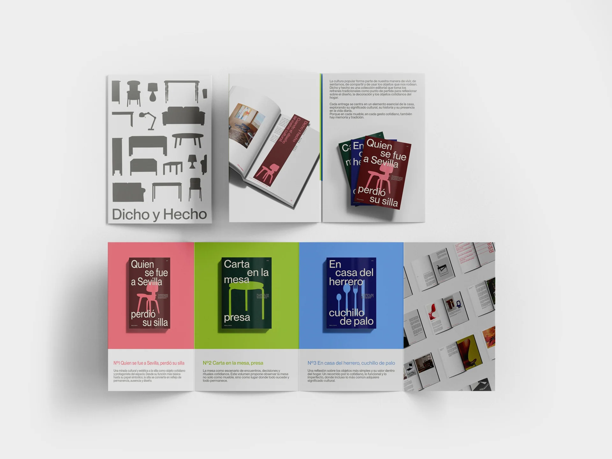
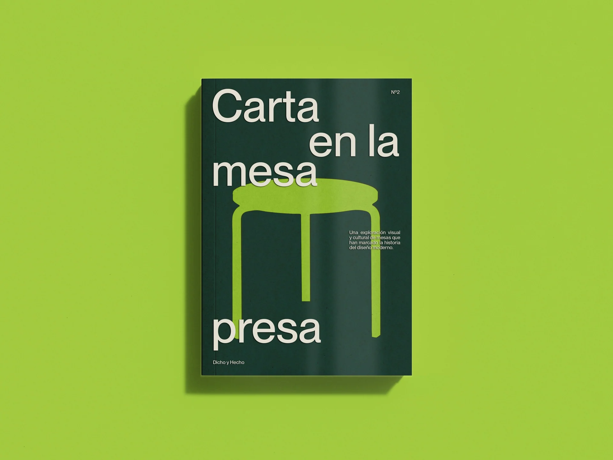
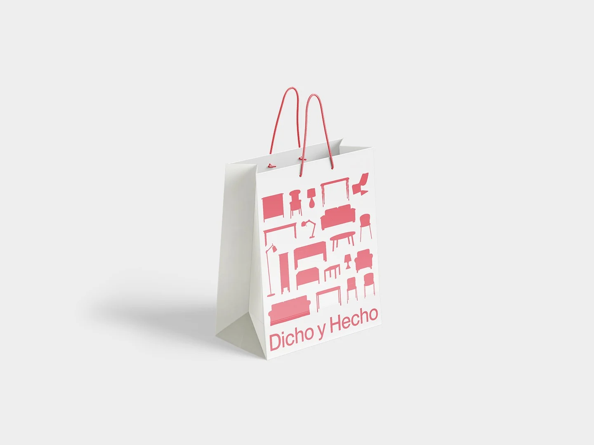

DICHO Y HECHO
03 / 04Editorial design · 2026
- Editorial Design
- Book Design
- Die-Cut Design
- Visual System
- Art Direction
Dicho y hecho is an editorial design project for a collection of die-cut books about domestic objects and popular Spanish sayings.
Each volume starts from a traditional proverb and uses it to explore a piece of furniture or household object from a cultural, symbolic, and visual perspective. One of the main volumes, Quien se fue a Sevilla perdió su silla, focuses on the chair as an everyday object loaded with social meaning: a place of rest, presence, authority, belonging, and absence. The popular saying becomes a way to reflect on how occupying a seat can also mean occupying a position.
Through acetate covers, die-cut shapes, monochromatic colour systems, and clean editorial layouts, the project transforms the book into an object that communicates both through its content and its physical form. The collection includes cover designs, interior spreads, bookmarks, a diptych, tote bag applications, and a social media launch campaign.

















